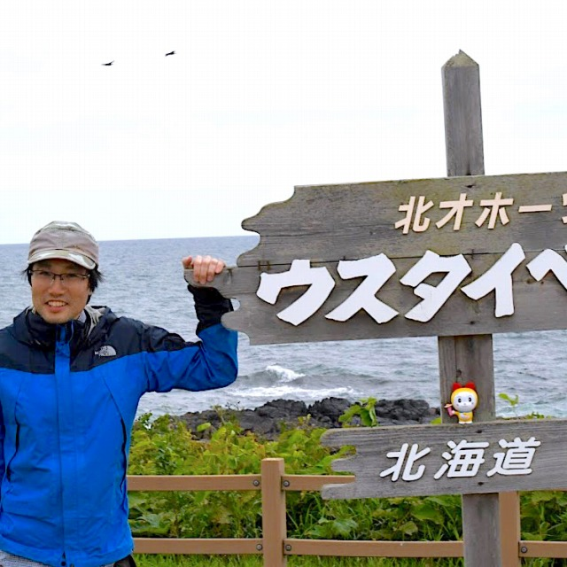
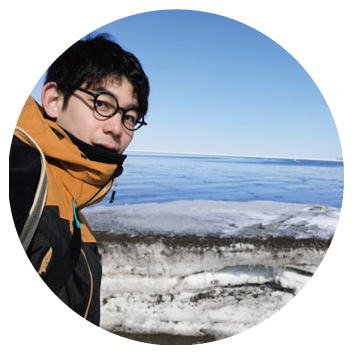
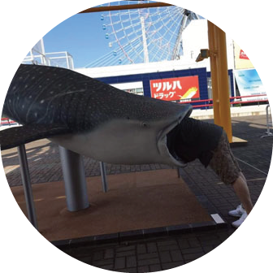
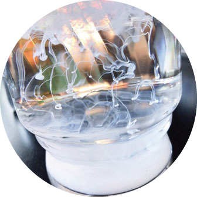
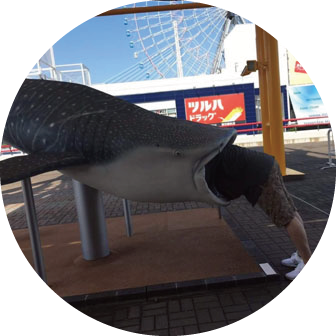
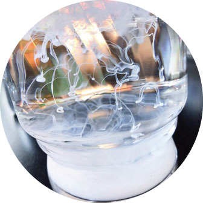

メンバー

関 宰 （准教授）
研究テーマ
将来，地球の気候モードはどのように変容するのか
北海道大学低温科学研究所・寒冷圏海洋圏科学部門・准教授
（環オホーツク観測センタースタッフを兼任、大学院環境科学院・准教授を併任）
〒060-0819 札幌市北区北19条西8丁目 (Room 328)
電話番号：011-706-5504 FAX番号：011-706-7142（研究所共通）
E-mail：seki at lowtem.hokudai.ac.jp
学歴：
1998年 東京都立大学理学部化学科卒業
2000年 東京都立大学大学院理学研究科化学専攻修了
2003年 北海道大学大学院地球環境科学研究科博士後期課程 学位取得
職歴：
2003-2006年 北海道大学低温科学研究所 COE研究員
2006-2007年 ブリストル大学化学科 日本学術振興会特別研究員
2007-2009年 北海道大学大学院地球環境科学研究院 日本学術振興会特別研究員
2009年～ 北海道大学低温科学研究所 准教授
趣味：
登山とランニング
小野 かおり （研究補佐員）
中村 由佳 （研究補助員）
在籍中
-
飯塚 睦 （D1）
研究テーマ
＋１℃，＋２℃の温暖化で南極氷床はどのくらい融解するか？ -

古川 圭介 （M2）
研究テーマ
気候変動における極域増幅メカニズムの謎の究明 -

研究テーマ
幻の文化と呼ばれるオホーツク文化の盛衰に気候変動は影響を与えたか？
2020年度 修了生
-

M2 Shimono Tomohiro
-

M2 Honda Haruki
-
M2 Md.Arifur Rahman
-

M2 Shimono Tomohiro
-

M2 Honda Haruki
-
M2 Md.Arifur Rahman